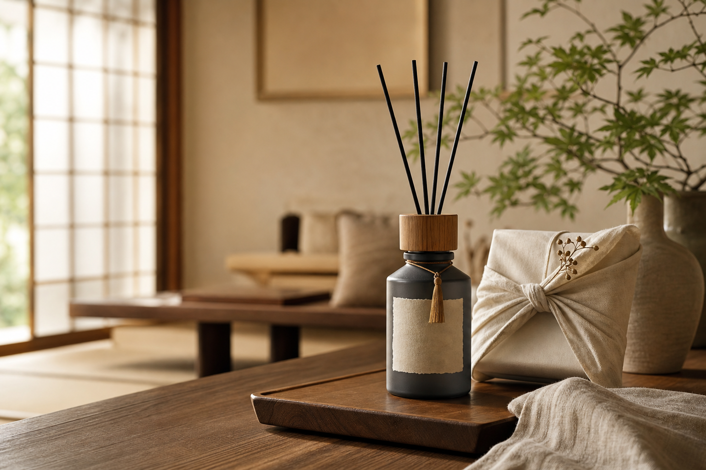
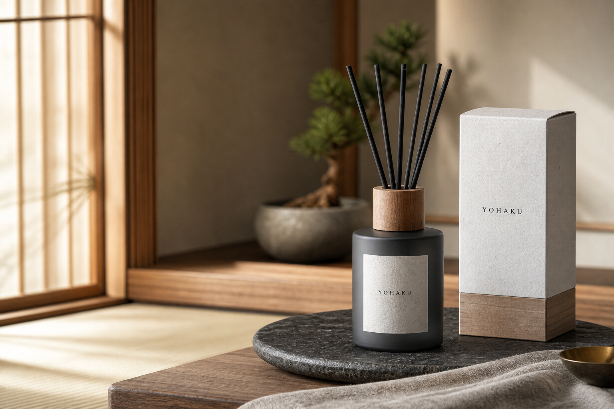
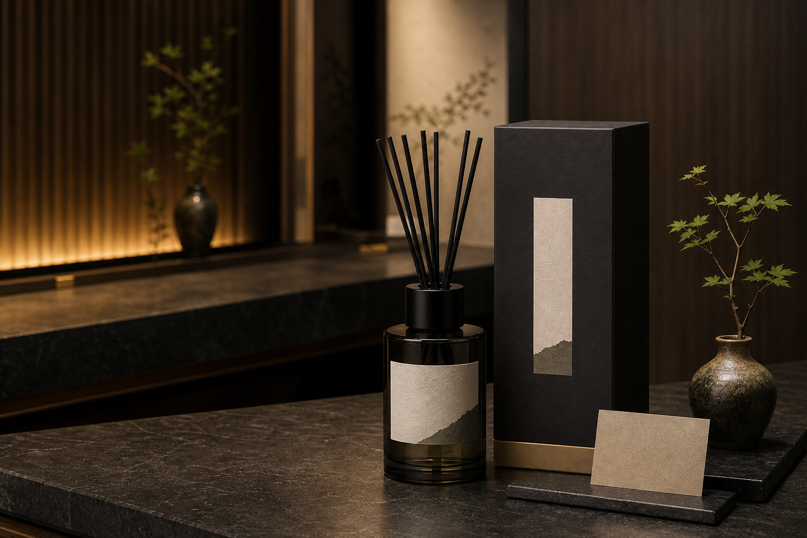
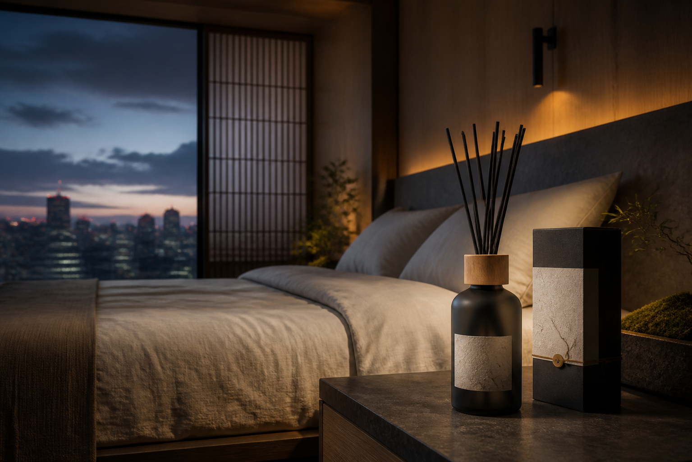

両親ギフト
親孝香
母の日・父の日・敬老の日に。強く香らせず、実家の玄関や寝室にそっと馴染む一本。
TSUKIJI TEMPLE FRAGRANCE
築地・法重寺の朝のお堂から着想した、受注生産のルームディフューザー。 落ち着いた静寂を好む両親へ、和の飲食店や美容サロンの上顧客へ、富裕層の寝室へ。

FIRST COLLECTION

両親ギフト
母の日・父の日・敬老の日に。強く香らせず、実家の玄関や寝室にそっと馴染む一本。

店舗・サロンVIP
和の飲食店、クリニック、美容サロンの上顧客へ。清潔感と品格が残る手土産。

富裕層寝室
湾岸タワーマンションや経営者の寝室へ。都市の明かりを遠くに感じる静寂。
BRAND STORY
YOHAKUは、ご利益や効能をうたう商品ではありません。築地というにぎわいのそばにある寺の静けさを、 玄関・寝室・店舗の余白に持ち帰るための空間フレグランスです。
GIFT & BUSINESS
母の日、父の日、敬老の日、長寿祝いに。落ち着いた静寂を好む方へ。
上顧客の記憶に残る、店舗らしさのある手土産やVIPギフトとして。
開院祝い、移転祝い、成約祝い、紹介礼品に。熨斗やカード相談にも対応。
MADE TO ORDER
初回は限定108本から開始。香り、本数、包装、用途、希望納期を入力して送信してください。 法人・店舗向けの10本以上の注文も同じフォームから相談できます。
FAQ
受注生産のため、予約締切後に製造数を確定し、発送予定日をメールでご案内します。
強く残るタイプではなく、玄関や寝室で自然に感じる設計です。リードの本数で調整できます。
医療効果や宗教的効能を示すものではありません。空間を整えるためのルームフレグランスです。